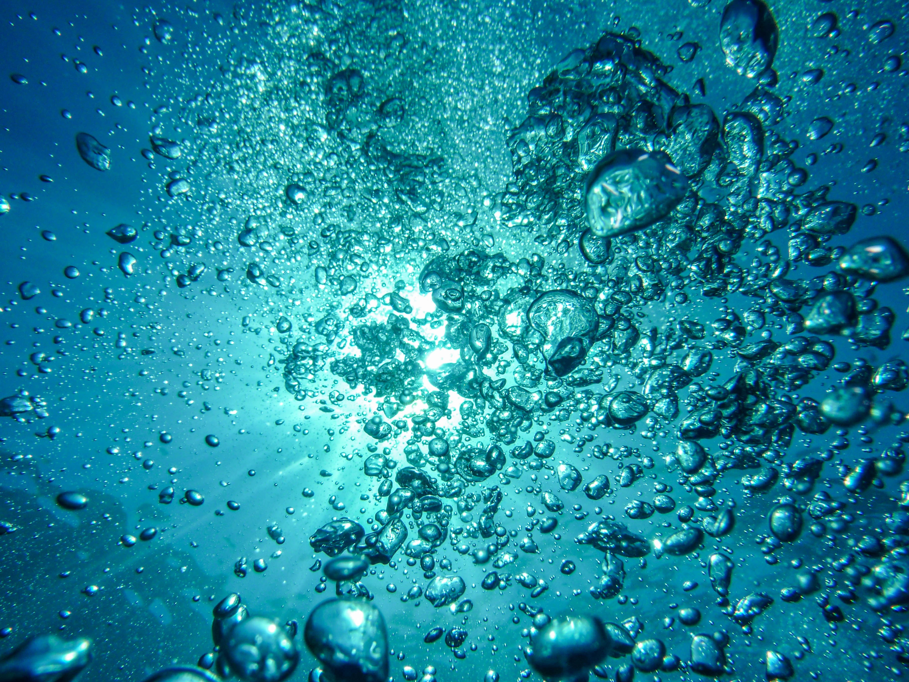
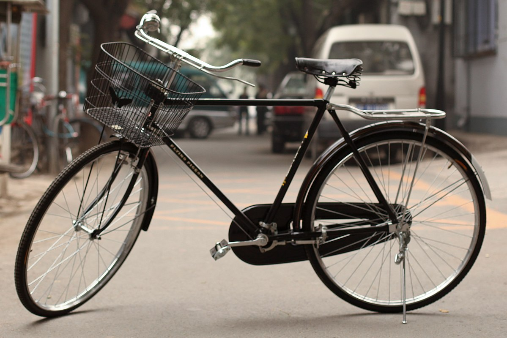
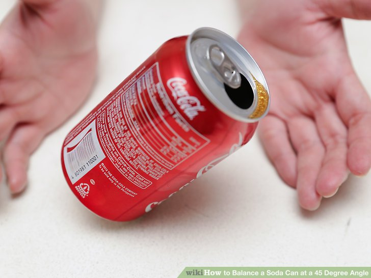

Pay attention to how you use water. The little things can make a big difference. Every time you turn off the water while you're brushing your teeth, you're doing something good. Got a leaky toilet? You might be wasting 200 gallons (757 liters) of water a day [source: EPA]. Try drinking tap water instead of bottled water, so you aren't wasting all that packaging as well. Wash your clothes in cold water when you can.

Leave your car at home. If you can stay off the road just two days a week, you'll reduce greenhouse gas emissions by an average of 1,590 pounds (721 kilograms) per year [source: EPA]. Combine your errands -- hit the post office, grocery store and shoe repair place in one trip. It will save you gas and time.

PWalk or ride your bike to work, school and anywhere you can. You can reduce greenhouse gases while burning some calories and improving your health. If you can't walk or bike, use mass transit or carpool. Every car not on the road makes a difference.

Recycle.You can help reduce pollution just by putting that soda can in a different bin. If you're trying to choose between two products, pick the one with the least packaging. If an office building of 7,000 workers recycled all of its office paper waste for a year, it would be the equivalent of taking almost 400 cars off the road
Compost. Think about how much trash you make in a year. Reducing the amount of solid waste you produce in a year means taking up less space in landfills, so your tax dollars can work somewhere else. Plus, compost makes a great natural fertilizer. Composting is easier than you think.
Change your light bulbs. Compact fluorescent light bulbs (CFLs) last 10 times longer than a standard bulb and use at least two-thirds less energy. If you're shopping for new appliances or even home electronics, look for ENERGY STAR products, which have met EPA and U.S. Department of Energy guidelines for energy efficiency. As of December 2013, ENERGY STAR had helped families and businesses to save an estimated $295 billion on utility bills and prevented more than 2.3 billion tons (2.1 billion metric tons) of greenhouse gas emissions from being released over the past two decades [source: ENERGY STAR]. (Learn more about proper disposal of CFLs.)